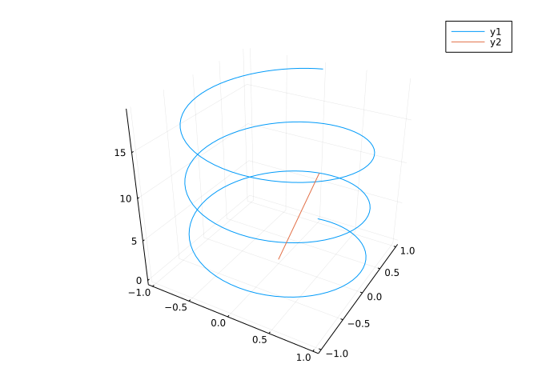
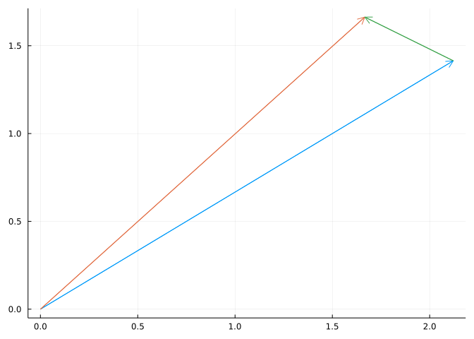
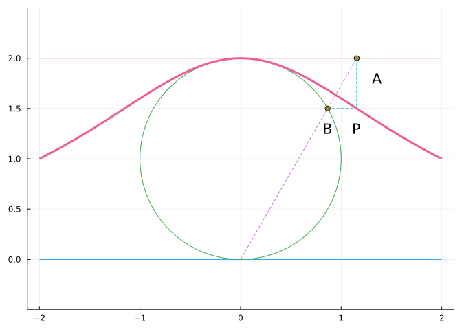
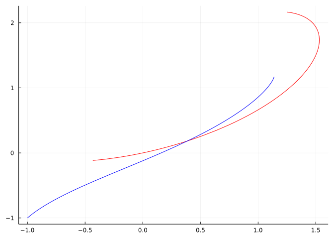
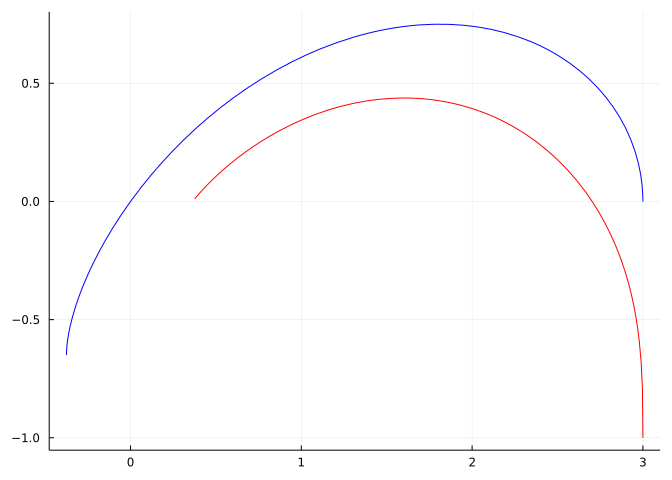

f(t) = [sin(t), 2*cos(t)]
g(t) = [sin(t), cos(t), t]
h(t) = [2, 3] + t * [1, 2]h (generic function with 1 method)This section uses these add-on packages:
and
We discuss functions of a single variable that return a vector in \(R^n\). There are many parallels to univariate functions (when \(n=1\)) and differences.
A function \(\vec{f}: R \rightarrow R^n\), \(n > 1\) is called a vector-valued function. Some examples:
\[ \vec{f}(t) = \langle \sin(t), 2\cos(t) \rangle, \quad \vec{g}(t) = \langle \sin(t), \cos(t), t \rangle, \quad \vec{h}(t) = \langle 2, 3 \rangle + t \cdot \langle 1, 2 \rangle. \]
The components themselves are also functions of \(t\), in this case univariate functions. Depending on the context, it can be useful to view vector-valued functions as a function that returns a vector, or a vector of the component functions.
The above example functions have \(n\) equal \(2\), \(3\), and \(2\) respectively. We will see that many concepts of calculus for univariate functions (\(n=1\)) have direct counterparts.
(We use \(\vec{f}\) above to emphasize the return value is a vector, but will quickly drop that notation and let context determine if \(f\) refers to a scalar- or vector-valued function.)
In Julia, the representation of a vector-valued function is straightforward: we define a function of a single variable that returns a vector. For example, the three functions above would be represented by:
h (generic function with 1 method)For a given t, these evaluate to a vector. For example:
We can create a vector of functions, e.g., F = [cos, sin, identity], but calling this object, as in F(t), would require some work, such as t = 1; [f(t) for f in F] or 1 .|> F.
3-element Vector{Real}:
0.5403023058681398
0.8414709848078965
1or
A vector-valued function is typically visualized as a curve. That is, for some range, \(a \leq t \leq b\) the set of points \(\{\vec{f}(t): a \leq t \leq b\}\) are plotted. If, say in \(n=2\), we have \(x(t)\) and \(y(t)\) as the component functions, then the graph would also be the parametric plot of \(x\) and \(y\). The term planar curve is common for the \(n=2\) case and space curve for the \(n \geq 3\) case.
This plot represents the vectors with their tails at the origin.
There is a convention for plotting the component functions to yield a parametric plot within the Plots package (e.g., plot(x, y, a, b)). This can be used to make polar plots, where x is t -> r(t)*cos(t) and y is t -> r(t)*sin(t).
However, we will use a different approach, as the component functions are not naturally produced from the vector-valued function.
In Plots, the command plot(xs, ys), where, say, xs=[x1, x2, ..., xn] and ys=[y1, y2, ..., yn], will make a connect-the-dot plot between corresponding pairs of points. As previously discussed, this can be used as an alternative to plotting a function through plot(f, a, b): first make a set of \(x\) values, say xs=range(a, b, length=100); then the corresponding \(y\) values, say ys = f.(xs); and then plotting through plot(xs, ys).
Similarly, were a third vector, zs, for \(z\) components used, plot(xs, ys, zs) will make a \(3\)-dimensional connect the dot plot
However, our representation of vector-valued functions naturally generates a vector of points: [[x1,y1], [x2, y2], ..., [xn, yn]], as this comes from broadcasting f over some time values. That is, for a collection of time values, ts the command f.(ts) will produce a vector of points. (Technically a vector of vectors, but points if you identify the \(2\)-\(d\) vectors as points.)
To get the xs and ys from this is conceptually easy: just iterate over all the points and extract the corresponding component. For example, to get xs we would have a command like [p[1] for p in f.(ts)]. Similarly, the ys would use p[2] in place of p[1]. The unzip function from the CalculusWithJulia package does this for us. The name comes from how the zip function in base Julia takes two vectors and returns a vector of the values paired off. This is the reverse. As previously mentioned, unzip uses the invert function of the SplitApplyCombine package to invert the indexing (the \(j\)th component of the \(i\)th point can be referenced by vs[i][j] or invert(vs)[j][i]).
Visually, we have unzip performing this reassociation:
[[x1, y1, z1], (⌈x1⌉, ⌈y1⌉, ⌈z1⌉,
[x2, y2, z2], |x2|, |y2|, |z2|,
[x3, y3, z3], --> |x3|, |y3|, |z3|,
⋮ ⋮
[xn, yn, zn]] ⌊xn⌋, ⌊yn⌋, ⌊zn⌋ )To turn a collection of vectors into separate arguments for a function, splatting (the ...) is used.
Finally, with these definitions, we can visualize the three functions we have defined.
Here we show the plot of f over the values between \(0\) and \(2\pi\) and also add a vector anchored at the origin defined by f(1).
The trace of the plot is an ellipse. If we describe the components as \(\vec{f}(t) = \langle x(t), y(t) \rangle\), then we have \(x(t)^2 + y(t)^2/4 = 1\). That is, for any value of \(t\), the resulting point satisfies the equation \(x^2 + y^2/4 =1\) for an ellipse.
The plot of \(g\) needs \(3\)-dimensions to render. For most plotting backends, the following should work with no differences, save the additional vector is anchored in \(3\) dimensions now:
ts = range(0, 6pi, length=200)
plot(unzip(g.(ts))...) # use splatting to avoid xs,ys,zs = unzip(g.(ts))
arrow!([0, 0, 0], g(2pi))
Here the graph is a helix; three turns are plotted. If we write \(g(t) = \langle x(t), y(t), z(t) \rangle\), as the \(x\) and \(y\) values trace out a circle, the \(z\) value increases. When the graph is viewed from above, as below, we see only \(x\) and \(y\) components, and the view is circular.
The graph of \(h\) shows that this function parameterizes a line in space. The line segment for \(-2 \leq t \leq 2\) is shown below:
plot_parametric functionWhile the unzip function is easy to understand as a function that reshapes data from one format into one that plot can use, it’s usage is a bit cumbersome. The CalculusWithJulia package provides a function plot_parametric which hides the use of unzip and the splatting within a function definition.
The function borrows a calling style for Makie. The interval to plot over is specified first using a..b notation (which specifies a closed interval in the IntervalSets package), then the function is specified. Additional keyword arguments are passed along to plot.
Defining plotting functions in Julia for Plots is facilitated by the RecipesBase package. There are two common choices: creating a new function for plotting, as is done with plot_parametric and plot_polar; or creating a new type so that plot can dispatch to an appropriate plotting method. The latter would also be a reasonable choice, but wasn’t taken here. In any case, each can be avoided by creating the appropriate values for xs and ys (and possibly zs).
Familiarity with equations for lines, circles, and ellipses is important, as these fundamental geometric shapes are often building blocks in the description of other more complicated things.
The point-slope equation of a line, \(y = y_0 + m \cdot (x - x_0)\) finds an analog. The slope, \(m\), is replaced with a vector \(\vec{v}\) and the point, \((x_0, y_0)\) is replaced with a vector \(\vec{p}\) identified with a point in the plane. A parameterization would then be \(\vec{f}(t) = \vec{p} + (t - t_0) \vec{v}\). From this, we have \(\vec{f}(t_0) = \vec{p}\).
The unit circle is instrumental in introducing the trigonometric functions though the identification of an angle \(t\) with a point on the unit circle \((x,y)\) through \(y = \sin(t)\) and \(x=\cos(t)\). With this identification certain properties of the trigonometric functions are immediately seen, such as the period of \(\sin\) and \(\cos\) being \(2\pi\), or the angles for which \(\sin\) and \(\cos\) are positive or even increasing. Further, this gives a natural parameterization for a vector-valued function whose plot yields the unit circle, namely \(\vec{f}(t) = \langle \cos(t), \sin(t) \rangle\). This parameterization starts (at \(t=0\)) at the point \((1, 0)\). More generally, we might have additional parameters \(\vec{f}(t) = \vec{p} + R \cdot \langle \cos(\omega(t-t_0)), \sin(\omega(t-t_0)) \rangle\) to change the origin, \(\vec{p}\); the radius, \(R\); the starting angle, \(t_0\); and the rotational frequency, \(\omega\).
An ellipse has a slightly more general equation than a circle and in simplest forms may satisfy the equation \(x^2/a^2 + y^2/b^2 = 1\), where when \(a=b\) a circle is being described. A vector-valued function of the form \(\vec{f}(t) = \langle a\cdot\cos(t), b\cdot\sin(t) \rangle\) will trace out an ellipse.
The above description of an ellipse is useful, but it can also be useful to re-express the ellipse so that one of the foci is at the origin. With this, the ellipse can be given in polar coordinates through a description of the radius:
\[ r(\theta) = \frac{a (1 - e^2)}{1 + e \cos(\theta)}. \]
Here, \(a\) is the semi-major axis (\(a > b\)); \(e\) is the eccentricity given by \(b = a \sqrt{1 - e^2}\); and \(\theta\) a polar angle.
Using the conversion to Cartesian equations, we have \(\vec{f}(\theta) = \langle r(\theta) \cos(\theta), r(\theta) \sin(\theta)\rangle\).
For example:
The Spirograph is “… a geometric drawing toy that produces mathematical roulette curves of the variety technically known as hypotrochoids and epitrochoids. It was developed by British engineer Denys Fisher and first sold in \(1965\).” These can be used to make interesting geometrical curves.
Following Wikipedia: Consider a fixed outer circle \(C_o\) of radius \(R\) centered at the origin. A smaller inner circle \(C_i\) of radius \(r < R\) rolling inside \(C_o\) and is continuously tangent to it. \(C_i\) will be assumed never to slip on \(C_o\) (in a real Spirograph, teeth on both circles prevent such slippage). Now assume that a point \(A\) lying somewhere inside \(C_{i}\) is located a distance \(\rho < r\) from \(C_i\)’s center.
The center of the inner circle will move in a circular manner with radius \(R-r\). The fixed point on the inner circle will rotate about this center. The accumulated angle may be described by the angle the point of contact of the inner circle with the outer circle. Call this angle \(t\).
Suppose the outer circle is centered at the origin and the inner circle starts (\(t=0\)) with center \((R-r, 0)\) and rotates around counterclockwise. Then if the point of contact makes angle \(t\), the arc length along the outer circle is \(Rt\). The inner circle will have moved a distance \(r t'\) in the opposite direction, so \(Rt =-r t'\) and solving the angle will be \(t' = -(R/r)t\).
If the initial position of the fixed point is at \((\rho, 0)\) relative to the origin, then the following function will describe the motion:
\[ \vec{s}(t) = (R-r) \cdot \langle \cos(t), \sin(t) \rangle + \rho \cdot \langle \cos(-\frac{R}{r}t), \sin(-\frac{R}{r}t) \rangle. \]
To visualize this we first define a helper function to draw a circle at point \(P\) with radius \(R\):
circle! (generic function with 1 method)Then we have this function to visualize the spirograph for different \(t\) values:
function spiro(t; r=2, R=5, rho=0.8*r)
cent(t) = (R-r) * [cos(t), sin(t)]
p = plot(legend=false, aspect_ratio=:equal)
circle!([0,0], R, color=:blue)
circle!(cent(t), r, color=:black)
tp(t) = -R/r * t
s(t) = cent(t) + rho * [cos(tp(t)), sin(tp(t))]
plot_parametric!(0..t, s, color=:red)
p
endspiro (generic function with 1 method)And we can see the trace for \(t=\pi\):
The point of contact is at \((-R, 0)\), as expected. Carrying this forward to a full circle’s worth is done through:
The curve does not match up at the start. For that, a second time around the outer circle is needed:
Whether the curve will have a period or not is decided by the ratio of \(R/r\) being rational or irrational.
In 1935 Marcel Duchamp showed a collection of “Rotorelief” discs at a French fair for inventors. Disk number 10 is comprised of several nested, off-center circles on disk that would be rotated to give a sense of movement. To mimic the effect:
let
# https://exploratorium.tumblr.com/post/33140874462/marcel-duchamp-rotoreliefs-duchamp-recognized
# coordinates and colors selected by gimp from
# https://arthur.io/art/marcel-duchamp/rotorelief-no-10-cage-modele-depose-verso
circs = [466 548 513 505 556 554 # x₁,y₁,x₂,y₂,x₂,y₃
414 549 511 455 595 549
365 545 507 408 635 548
319 541 506 361 673 546
277 543 509 317 711 546
236 539 507 272 747 551
201 541 504 230 781 550
166 541 503 189 816 544
140 542 499 153 848 538
116 537 496 119 879 538
96 539 501 90 905 534
81 530 500 67 930 530
72 525 498 51 949 529
66 520 500 36 966 527
60 515 499 25 982 526
35 509 499 11 1004 525 # outer edge, c₀
]
greenblue= RGB(8/100, 58/100, 53/100)
grey = RGB(76/100, 74/100, 72/100)
white = RGB(88/100, 85/100, 81/100)
# solve for center of circle, radius for each
@syms h::positive k::positive r::positive
function solve_i(i)
eqs = [(p[1] - h)^2 + (p[2]-k)^2 ~ r^2 for
p ∈ (circs[i,1:2], circs[i,3:4], circs[i,5:6])]
d = solve(eqs)[1]
(x=float(d[h]), y=float(d[k]), r=float(d[r]))
end
c₀, cs... = solve_i.(16:-1:1) # c₀ is centered
function duchamp_rotorelief_10(θ)
p = plot(legend=false,
axis=nothing, xaxis=false, yaxis=false,
aspect_ratio=:equal)
O = [c₀.x, c₀.y]
θ̂ = [cos(θ), sin(θ)]
circle!(O, c₀.r, # outer ring is c₀
linewidth=2,
color=grey, fill=white,
seriestype=:shape)
for (i,c) ∈ enumerate(cs) # add nested rings
rᵢ = sqrt((c₀.x - c.x)^2+(c₀.y - c.y)^2)
P = O + rᵢ * θ̂ # rotate about origin by θ
circle!(P, c.r,
linewidth = i == 1 ? 1 : i <= 3 ? 2 : 3,
color=greenblue)
end
p
end
# animate using Plots.@animate macro
anim = @animate for θ ∈ range(0, -2π, length=60)
duchamp_rotorelief_10(θ)
end
fname = tempname() * ".gif"
gif(anim, fname, fps = 40)
endLoadError: UndefVarError: .. not definedsys:1: SymPyDeprecationWarning:
non-Expr objects in a Matrix is deprecated. Matrix represents
a mathematical matrix. To represent a container of non-numeric
entities, Use a list of lists, TableForm, NumPy array, or some
other data structure instead.
See https://docs.sympy.org/latest/explanation/active-deprecations.html#deprecated-non-expr-in-matrix
for details.
This has been deprecated since SymPy version 1.9. It
will be removed in a future version of SymPy.
Ivars Peterson described the carnival ride “tilt-a-whirl” as a chaotic system, whose equations of motion are presented in American Journal of Physics by Kautz and Huggard. The tilt-a-whirl has a platform that moves in a circle that also moves up and down. To describe the motion of a point on the platform assuming it has radius \(R\) and period \(T\) and rises twice in that period could be done with the function:
\[ \vec{u}(t) = \langle R \sin(2\pi t/T), R \cos(2\pi t/T), h + h \cdot \sin(2\pi t/ T) \rangle. \]
A passenger sits on a circular platform with radius \(r\) attached at some point on the larger platform. The dynamics of the person on the tilt-a-whirl depend on physics, but for simplicity, let’s assume the platform moves at a constant rate with period \(S\) and has no relative \(z\) component. The motion of the platform in relation to the point it is attached would be modeled by:
\[ \vec{v}(t) = \langle r \sin(2\pi t/S), r \sin(2\pi t/S), 0 \rangle. \]
And the motion relative to the origin would be the vector sum, or superposition:
\[ \vec{f}(t) = \vec{u}(t) + \vec{v}(t). \]
To visualize for some parameters, we have:
The definition of a limit for a univariate function is: For every \(\epsilon > 0\) there exists a \(\delta > 0\) such that if \(0 < |x-c| < \delta\) then \(|f(x) - L | < \epsilon\).
If the notion of “\(\vec{f}\) is close to \(L\)” is replaced by close in the sense of a norm, or vector distance, then the same limit definition can be used, with the new wording “… \(\| \vec{f}(x) - L \| < \epsilon\)”.
The notion of continuity is identical: \(\vec{f}(t)\) is continuous at \(t_0\) if \(\lim_{t \rightarrow t_0}\vec{f}(t) = \vec{f}(t_0)\). More informally \(\| \vec{f}(t) - \vec{f}(t_0)\| \rightarrow 0\).
A consequence of the triangle inequality is that a vector-valued function is continuous or has a limit if and only it its component functions do.
If \(\vec{f}(t)\) is vector valued, and \(\Delta t > 0\) then we can consider the vector:
\[ \vec{f}(t + \Delta t) - \vec{f}(t) \]
For example, if \(\vec{f}(t) = \langle 3\cos(t), 2\sin(t) \rangle\) and \(t=\pi/4\) and \(\Delta t = \pi/16\) we have this picture:
f(t) = [3cos(t), 2sin(t)]
t, Δt = pi/4, pi/16
df = f(t + Δt) - f(t)
plot(legend=false)
arrow!([0,0], f(t))
arrow!([0,0], f(t + Δt))
arrow!(f(t), df)
The length of the difference appears to be related to the length of \(\Delta t\), in a similar manner as the univariate derivative. The following limit defines the derivative of a vector-valued function:
\[ \vec{f}'(t) = \lim_{\Delta t \rightarrow 0} \frac{f(t + \Delta t) - f(t)}{\Delta t}. \]
The limit exists if the component limits do. The component limits are just the derivatives of the component functions. So, if \(\vec{f}(t) = \langle x(t), y(t) \rangle\), then \(\vec{f}'(t) = \langle x'(t), y'(t) \rangle\).
If the derivative is never \(\vec{0}\), the curve is called regular. For a regular curve the derivative is a tangent vector to the parameterized curve, akin to the case for a univariate function. We can use ForwardDiff to compute the derivative in the exact same manner as was done for univariate functions:
using ForwardDiff
D(f,n=1) = n > 1 ? D(D(f),n-1) : x -> ForwardDiff.derivative(f, float(x))
Base.adjoint(f::Function) = D(f) # allow f' to compute derivative(This is already done by the CalculusWithJulia package.)
We can visualize the tangential property through a graph:
Were symbolic expressions used in place of functions, the vector-valued function would naturally be represented as a vector of expressions:
We will see working with these expressions is not identical to working with a vector-valued function.
To plot, we can avail ourselves of the the parametric plot syntax. The following expands to plot(cos(t), sin(t), t, 0, 2pi):
The unzip usage, as was done above, could be used, but it would be more trouble in this case.
To evaluate the function at a given value, say \(t=2\), we can use subs with broadcasting to substitute into each component:
Limits are performed component by component, and can also be defined by broadcasting, again with the need to adjust the values:
Derivatives, as was just done through a limit, are a bit more straightforward than evaluation or limit taking, as we won’t bump into the shape mismatch when broadcasting:
The second derivative, can be found through:
Here are some sample applications of the derivative.
The derivative of a vector-valued function is similar to that of a univariate function, in that it indicates a direction tangent to a curve. The point-slope form offers a straightforward parameterization. We have a point given through the vector-valued function and a direction given by its derivative. (After identifying a vector with its tail at the origin with the point that is the head of the vector.)
With this, the equation is simply \(\vec{tl}(t) = \vec{f}(t_0) + \vec{f}'(t_0) \cdot (t - t_0)\), where the dot indicates scalar multiplication.
In physics, we learn that the equation \(F=ma\) can be used to derive a formula for postion, when acceleration, \(a\), is a constant. The resulting equation of motion is \(x = x_0 + v_0t + (1/2) at^2\). Similarly, if \(x(t)\) is a vector-valued postion vector, and the second derivative, \(x''(t) =\vec{a}\), a constant, then we have: \(x(t) = \vec{x_0} + \vec{v_0}t + (1/2) \vec{a} t^2\).
For two dimensions, we have the force due to gravity acts downward, only in the \(y\) direction. The acceleration is then \(\vec{a} = \langle 0, -g \rangle\). If we start at the origin, with initial velocity \(\vec{v_0} = \langle 2, 3\rangle\), then we can plot the trajectory until the object returns to ground (\(y=0\)) as follows:
A tractrix, studied by Perrault, Newton, Huygens, and many others, is the curve along which an object moves when pulled in a horizontal plane by a line segment attached to a pulling point (Wikipedia). If the object is placed at \((a,0)\) and the puller at the origin, and the puller moves along the positive \(x\) axis, then the line will always be tangent to the curve and of fixed length, so determinable from the motion of the puller. In this example \(dy/dx = -\sqrt{a^2-x^2}/x\).
This is the key property: “Due to the geometrical way it was defined, the tractrix has the property that the segment of its tangent, between the asymptote and the point of tangency, has constant length \(a\).”
The tracks made by the front and rear bicycle wheels also have this same property and similarly afford a mathematical description. We follow Dunbar, Bosman, and Nooij from The Track of a Bicycle Back Tire below, though Levi and Tabachnikov and Foote, Levi, and Tabachnikov were also consulted. Let \(a\) be the distance between the front and back wheels, whose positions are parameterized by \(\vec{F}(t)\) and \(\vec{B}(t)\), respectively. The key property is the distance between the two is always \(a\), and, as the back wheel is always moving in the direction of the front wheel, we have \(\vec{B}'(t)\) is in the direction of \(\vec{F}(t) - \vec{B}(t)\), that is the vector \((\vec{F}(t)-\vec{B}(t))/a\) is a unit vector in the direction of the derivative of \(\vec{B}\). How long is the derivative vector? That would be answered by the speed of the back wheel, which is related to the velocity of the front wheel. But only the component of the velocity in the direction of \(\vec{F}(t)-\vec{B}(t)\), so the speed of the back wheel is the length of the projection of \(\vec{F}'(t)\) onto the unit vector \((\vec{F}(t)-\vec{B}(t))/a\), which is identified through the dot product.
Combined, this gives the following equations relating \(\vec{F}(t)\) to \(\vec{B}(t)\):
\[ s_B(t) = \vec{F}'(t) \cdot \frac{\vec{F}(t)-\vec{B}(t)}{a}, \quad \vec{B}'(t) = s_B(t) \frac{\vec{F}(t)-\vec{B}(t)}{a}. \]
This is a differential equation describing the motion of the back wheel in terms of the front wheel.
If the back wheel trajectory is known, the relationship is much easier, as the two differ by a vector of length \(a\) in the direction of \(\vec{B}'(t)\), or:
\[ F(t) = \vec{B}(t) + a \frac{\vec{B'(t)}}{\|\vec{B}'(t)\|}. \]
We don’t discuss when a differential equation has a solution, or if it is unique when it does, but note that the differential equation above may be solved numerically, in a manner somewhat similar to what was discussed in ODEs. Here we will use the DifferentialEquations package for finding numeric solutions.
We can define our equation as follows, using p to pass in the two parameters: the wheel-base length \(a\), and \(F(t)\), the parameterization of the front wheel in time:
function bicycle(dB, B, p, t)
a, F = p # unpack parameters
speed = F'(t) ⋅ (F(t) - B) / a
dB[1], dB[2] = speed * (F(t) - B) / a
endbicycle (generic function with 1 method)Let’s consider a few simple cases first. We suppose \(a=1\) and the front wheel moves in a circle of radius \(3\). Here is how we can plot two loops:
t₀, t₁ = 0.0, 4pi
tspan₁ = (t₀, t₁) # time span to consider
a₁ = 1
F₁(t) = 3 * [cos(t), sin(t)]
p₁ = (a₁, F₁) # combine parameters
B₁0 = F₁(0) - [0, a₁] # some initial position for the back
prob₁ = ODEProblem(bicycle, B₁0, tspan₁, p₁)
out₁ = solve(prob₁, reltol=1e-6, Tsit5())retcode: Success
Interpolation: specialized 4th order "free" interpolation
t: 141-element Vector{Float64}:
0.0
0.024824742235786373
0.06751397117038993
0.1225775744732509
0.1929915124073604
0.2711129719090575
0.3857318027998987
0.46740132244848365
0.5643259884408179
0.6554327124582173
0.751828610060814
0.8474585646116065
0.9451683737988007
⋮
11.626710544395511
11.715968802190137
11.806662802491857
11.898926271619045
11.99240771723366
12.086815783410266
12.181697617359077
12.276652206566792
12.37129130733533
12.465296916090319
12.558395042971764
12.566370614359172
u: 141-element Vector{Vector{Float64}}:
[3.0, -1.0]
[2.9999774774962056, -0.9255330157507721]
[2.9995614415250142, -0.7975914654455536]
[2.997483559821272, -0.6329875803722077]
[2.990691054485171, -0.4235364001967119]
[2.975659153761233, -0.1929487825725642]
[2.935503829312559, 0.14094436765464505]
[2.8916659543917227, 0.3747473361066778]
[2.8215694921803482, 0.6465254569928282]
[2.736905463531427, 0.8949976598137234]
[2.6270391429970594, 1.1488425231948574]
[2.4974132664632624, 1.3896631861459474]
[2.344143370381871, 1.622435084495964]
⋮
[0.8123161465358226, -2.7092697598779267]
[1.0505861468263447, -2.6260748066160198]
[1.284111227882155, -2.520130648758621]
[1.510835839600701, -2.3911033418366356]
[1.72743761116193, -2.2396337696631425]
[1.9308706574010548, -2.066818479716193]
[2.1179952135647127, -1.8745923300524743]
[2.2861878502648825, -1.66533637730947]
[2.433328078249219, -1.4418441695389987]
[2.5579261636905746, -1.2070683064035401]
[2.6590625968276593, -0.9640468194329426]
[2.666666766573229, -0.9428088491846468]The object out holds the answer. This object is callable, in that out(t) will return the numerically computed value for the answer to our equation at time point t.
To plot the two trajectories, we could use that out.u holds the \(x\) and \(y\) components of the computed trajectory, but more simply, we can just call out like a function.
plt₁ = plot_parametric(t₀..t₁, F₁, legend=false)
plot_parametric!(t₀..t₁, out₁, linewidth=3)
## add the bicycle as a line segment at a few times along the path
for t in range(t₀, t₁, length=11)
plot!(unzip([out₁(t), F₁(t)])..., linewidth=3, color=:black)
end
plt₁LoadError: UndefVarError: .. not definedThat the rear wheel track appears shorter, despite the rear wheel starting outside the circle, is typical of bicycle tracks and also a reason to rotate tires on car, as the front ones move a bit more than the rear, so presumably wear faster.
Let’s look what happens if the front wheel wobbles back and forth following a sine curve. Repeating the above, only with \(F\) redefined, we have:
a₂ = 1
F₂(t) = [t, 2sin(t)]
p₂ = (a₂, F₂)
B₂0 = F₂(0) - [0, a₂] # some initial position for the back
prob₂ = ODEProblem(bicycle, B₂0, tspan₁, p₂)
out₂ = solve(prob₂, reltol=1e-6, Tsit5())
plot_parametric(t₀..t₁, F₂, legend=false)
plot_parametric!(t₀..t₁, t -> out₂(t), linewidth=3)LoadError: UndefVarError: .. not definedAgain, the back wheel moves less than the front.
The motion of the back wheel need not be smooth, even if the motion of the front wheel is, as this curve illustrates:
a₃ = 1
F₃(t) = [cos(t), sin(t)] + [cos(2t), sin(2t)]
p₃ = (a₃, F₃)
B₃0 = F₃(0) - [0,a₃]
prob₃ = ODEProblem(bicycle, B₃0, tspan₁, p₃)
out₃ = solve(prob₃, reltol=1e-6, Tsit5())
plot_parametric(t₀..t₁, F₃, legend=false)
plot_parametric!(t₀..t₁, t -> out₃(t), linewidth=3)LoadError: UndefVarError: .. not definedThe back wheel is moving backwards for part of the above trajectory.
This effect can happen even for a front wheel motion as simple as a circle when the front wheel radius is less than the wheelbase:
a₄ = 1
F₄(t) = a₄/3 * [cos(t), sin(t)]
p₄ = (a₄, F₄)
t₀₄, t₁₄ = 0.0, 25pi
tspan₄ = (t₀₄, t₁₄)
B₄0 = F₄(0) - [0, a₄]
prob₄ = ODEProblem(bicycle, B₄0, tspan₄, p₄)
out₄ = solve(prob₄, reltol=1e-6, Tsit5())
plot_parametric(t₀₄..t₁₄, F₄, legend=false, aspect_ratio=:equal)
plot_parametric!(t₀₄..t₁₄, t -> out₄(t), linewidth=3)LoadError: UndefVarError: .. not definedLater we will characterize when there are cusps in the rear-wheel trajectory.
From the definition, as it is for univariate functions, for vector-valued functions \(\vec{f}, \vec{g}: R \rightarrow R^n\):
\[ [\vec{f} + \vec{g}]'(t) = \vec{f}'(t) + \vec{g}'(t), \quad\text{and } [a\vec{f}]'(t) = a \vec{f}'(t). \]
If \(a(t)\) is a univariate (scalar) function of \(t\), then a product rule holds:
\[ [a(t) \vec{f}(t)]' = a'(t)\vec{f}(t) + a(t)\vec{f}'(t). \]
If \(s\) is a univariate function, then the composition \(\vec{f}(s(t))\) can be differentiated. Each component would satisfy the chain rule, and consequently:
\[ \frac{d}{dt}\left(\vec{f}(s(t))\right) = \vec{f}'(s(t)) \cdot s'(t), \]
The dot being scalar multiplication by the derivative of the univariate function \(s\).
Vector-valued functions do not have multiplication or division defined for them, so there are no ready analogues of the product and quotient rule. However, the dot product and the cross product produce new functions that may have derivative rules available.
For the dot product, the combination \(\vec{f}(t) \cdot \vec{g}(t)\) we have a univariate function of \(t\), so we know a derivative is well defined. Can it be represented in terms of the vector-valued functions? In terms of the component functions, we have this calculation specific to \(n=2\), but that which can be generalized:
\[ \begin{align*} \frac{d}{dt}(\vec{f}(t) \cdot \vec{g}(t)) &= \frac{d}{dt}(f_1(t) g_1(t) + f_2(t) g_2(t))\\ &= f_1'(t) g_1(t) + f_1(t) g_1'(t) + f_2'(t) g_2(t) + f_2(t) g_2'(t)\\ &= f_1'(t) g_1(t) + f_2'(t) g_2(t) + f_1(t) g_1'(t) + f_2(t) g_2'(t)\\ &= \vec{f}'(t)\cdot \vec{g}(t) + \vec{f}(t) \cdot \vec{g}'(t). \end{align*} \]
Suggesting the that a product rule like formula applies for dot products.
For the cross product, we let SymPy derive a formula for us.
3-element Vector{Sym}:
vs₁(tₛ)
vs₂(tₛ)
vs₃(tₛ)Then the cross product has a derivative:
3-element Vector{Sym}:
us₂(tₛ)*Derivative(vs₃(tₛ), tₛ) - us₃(tₛ)*Derivative(vs₂(tₛ), tₛ) - vs₂(tₛ)*Derivative(us₃(tₛ), tₛ) + vs₃(tₛ)*Derivative(us₂(tₛ), tₛ)
-us₁(tₛ)*Derivative(vs₃(tₛ), tₛ) + us₃(tₛ)*Derivative(vs₁(tₛ), tₛ) + vs₁(tₛ)*Derivative(us₃(tₛ), tₛ) - vs₃(tₛ)*Derivative(us₁(tₛ), tₛ)
us₁(tₛ)*Derivative(vs₂(tₛ), tₛ) - us₂(tₛ)*Derivative(vs₁(tₛ), tₛ) - vs₁(tₛ)*Derivative(us₂(tₛ), tₛ) + vs₂(tₛ)*Derivative(us₁(tₛ), tₛ)Admittedly, that isn’t very clear. With a peek at the answer, we show that the derivative is the same as the product rule would suggest (\(\vec{u}' \times \vec{v} + \vec{u} \times \vec{v}'\)):
In summary, these two derivative formulas hold for vector-valued functions \(R \rightarrow R^n\):
\[ \begin{align} (\vec{u} \cdot \vec{v})' &= \vec{u}' \cdot \vec{v} + \vec{u} \cdot \vec{v}',\\ (\vec{u} \times \vec{v})' &= \vec{u}' \times \vec{v} + \vec{u} \times \vec{v}'. \end{align} \]
The parameterization \(\vec{r}(t) = \langle \cos(t), \sin(t) \rangle\) describes a circle. Characteristic of this motion is a constant radius, or in terms of a norm: \(\| \vec{r}(t) \| = c\). The norm squared, can be expressed in terms of the dot product:
\[ \| \vec{r}(t) \|^2 = \vec{r}(t) \cdot \vec{r}(t). \]
Differentiating this for the case of a constant radius yields the equation \(0 = [\vec{r}\cdot\vec{r}]'(t)\), which simplifies through the product rule and commutativity of the dot product to \(0 = 2 \vec{r}(t) \cdot \vec{r}'(t)\). That is, the two vectors are orthogonal to each other. This observation proves to be very useful, as will be seen.
Kepler’s laws of planetary motion are summarized by:
Kepler was a careful astronomer, and derived these laws empirically. We show next how to derive these laws using vector calculus assuming some facts on Newtonian motion, as postulated by Newton. This approach is borrowed from Joyce.
We adopt a sun-centered view of the universe, placing the sun at the origin and letting \(\vec{x}(t)\) be the position of a planet relative to this origin. We can express this in terms of a magnitude and direction through \(r(t) \hat{x}(t)\).
Newton’s law of gravitational force between the sun and this planet is then expressed by:
\[ \vec{F} = -\frac{G M m}{r^2} \hat{x}(t). \]
Newton’s famous law relating force and acceleration is
\[ \vec{F} = m \vec{a} = m \ddot{\vec{x}}. \]
Combining, Newton states \(\vec{a} = -(GM/r^2) \hat{x}\).
Now to show the first law. Consider \(\vec{x} \times \vec{v}\). It is constant, as:
\[ \begin{align} (\vec{x} \times \vec{v})' &= \vec{x}' \times \vec{v} + \vec{x} \times \vec{v}'\\ &= \vec{v} \times \vec{v} + \vec{x} \times \vec{a}. \end{align} \]
Both terms are \(\vec{0}\), as \(\vec{a}\) is parallel to \(\vec{x}\) by the above, and clearly \(\vec{v}\) is parallel to itself.
This says, \(\vec{x} \times \vec{v} = \vec{c}\) is a constant vector, meaning, the motion of \(\vec{x}\) must lie in a plane, as \(\vec{x}\) is always orthogonal to the fixed vector \(\vec{c}\).
Now, by differentiating \(\vec{x} = r \hat{x}\) we have:
\[ \begin{align} \vec{v} &= \vec{x}'\\ &= (r\hat{x})'\\ &= r' \hat{x} + r \hat{x}', \end{align} \]
and so
\[ \begin{align} \vec{c} &= \vec{x} \times \vec{v}\\ &= (r\hat{x}) \times (r'\hat{x} + r \hat{x}')\\ &= r^2 (\hat{x} \times \hat{x}'). \end{align} \]
From this, we can compute \(\vec{a} \times \vec{c}\):
\[ \begin{align} \vec{a} \times \vec{c} &= (-\frac{GM}{r^2})\hat{x} \times r^2(\hat{x} \times \hat{x}')\\ &= -GM \hat{x} \times (\hat{x} \times \hat{x}') \\ &= GM (\hat{x} \times \hat{x}')\times \hat{x}. \end{align} \]
The last line by anti-commutativity.
But, the triple cross product can be simplified through the identify \((\vec{u}\times\vec{v})\times\vec{w} = (\vec{u}\cdot\vec{w})\vec{v} - (\vec{v}\cdot\vec{w})\vec{u}\). So, the above becomes:
\[ \begin{align} \vec{a} \times \vec{c} &= GM ((\hat{x}\cdot\hat{x})\hat{x}' - (\hat{x} \cdot \hat{x}')\hat{x})\\ &= GM (1 \hat{x}' - 0 \hat{x}). \end{align} \]
Now, since \(\vec{c}\) is constant, we have:
\[ \begin{align} (\vec{v} \times \vec{c})' &= (\vec{a} \times \vec{c})\\ &= GM \hat{x}'\\ &= (GM\hat{x})'. \end{align} \]
The two sides have the same derivative, hence differ by a constant:
\[ \vec{v} \times \vec{c} = GM \hat{x} + \vec{d}. \]
As \(\vec{u}\) and \(\vec{v}\times\vec{c}\) lie in the same plane - orthogonal to \(\vec{c}\) - so does \(\vec{d}\). With a suitable re-orientation, so that \(\vec{d}\) is along the \(x\) axis, \(\vec{c}\) is along the \(z\)-axis, then we have \(\vec{c} = \langle 0,0,c\rangle\) and \(\vec{d} = \langle d ,0,0 \rangle\), and \(\vec{x} = \langle x, y, 0 \rangle\). Set \(\theta\) to be the angle, then \(\hat{x} = \langle \cos(\theta), \sin(\theta), 0\rangle\).
Now
\[ \begin{align} c^2 &= \|\vec{c}\|^2 \\ &= \vec{c} \cdot \vec{c}\\ &= (\vec{x} \times \vec{v}) \cdot \vec{c}\\ &= \vec{x} \cdot (\vec{v} \times \vec{c})\\ &= r\hat{x} \cdot (GM\hat{x} + \vec{d})\\ &= GMr + r \hat{x} \cdot \vec{d}\\ &= GMr + rd \cos(\theta). \end{align} \]
Solving, this gives the first law. That is, the radial distance is in the form of an ellipse:
\[ r = \frac{c^2}{GM + d\cos(\theta)} = \frac{c^2/(GM)}{1 + (d/GM) \cos(\theta)}. \]
Kepler’s second law can also be derived from vector calculus. This derivation follows that given at MIT OpenCourseWare and OpenCourseWare.
The second law states that the area being swept out during a time duration only depends on the duration of time, not the time. Let \(\Delta t\) be this duration. Then if \(\vec{x}(t)\) is the position vector, as above, we have the area swept out between \(t\) and \(t + \Delta t\) is visualized along the lines of:
x1(t) = [cos(t), 2 * sin(t)]
t0, t1, Delta = 1.0, 2.0, 1/10
plot_parametric(0..pi/2, x1)
arrow!([0,0], x1(t0)); arrow!([0,0], x1(t0 + Delta))
arrow!(x1(t0), x1(t0+Delta)- x1(t0), linewidth=5)LoadError: UndefVarError: .. not definedThe area swept out, is basically the half the area of the parallelogram formed by \(\vec{x}(t)\) and \(\Delta \vec{x}(t) = \vec{x}(t + \Delta t) - \vec{x}(t))\). This area is \((1/2) (\vec{x} \times \Delta\vec{x}(t))\).
If we divide through by \(\Delta t\), and take a limit we have:
\[ \frac{dA}{dt} = \| \frac{1}{2}\lim_{\Delta t \rightarrow 0} (\vec{x} \times \frac{\vec{x}(t + \Delta t) - \vec{x}(t)}{\Delta t})\| = \frac{1}{2}\|\vec{x} \times \vec{v}\|. \]
But we saw above, that for the motion of a planet, that \(\vec{x} \times \vec{v} = \vec{c}\), a constant. This says, \(dA\) is a constant independent of \(t\), and consequently, the area swept out over a duration of time will not depend on the particular times involved, just the duration.
The third law relates the period to a parameter of the ellipse. We have from the above a strong suggestion that area of the ellipse can be found by integrating \(dA\) over the period, say \(T\). Assuming that is the case and letting \(a\) be the semi-major axis length, and \(b\) the semi-minor axis length, then
\[ \pi a b = \int_0^T dA = \int_0^T (1/2) \|\vec{x} \times \vec{v}\| dt = \| \vec{x} \times \vec{v}\| \frac{T}{2}. \]
As \(c = \|\vec{x} \times \vec{v}\|\) is a constant, this allows us to express \(c\) by: \(2\pi a b/T\).
But, we have
\[ r(\theta) = \frac{c^2}{GM + d\cos(\theta)} = \frac{c^2/(GM)}{1 + d/(GM) \cos(\theta)}. \]
So, \(e = d/(GM)\) and \(a (1 - e^2) = c^2/(GM)\). Using \(b = a \sqrt{1-e^2}\) we have:
\[ a(1-e^2) = c^2/(GM) = (\frac{2\pi a b}{T})^2 \frac{1}{GM} = \frac{(2\pi)^2}{GM} \frac{a^2 (a^2(1-e^2))}{T^2}, \]
or after cancelling \((1-e^2)\) from each side:
\[ T^2 = \frac{(2\pi)^2}{GM} \frac{a^4}{a} = \frac{(2\pi)^2}{GM} a^3. \]
The above shows how Newton might have derived Kepler’s observational facts. Next we show, that assuming the laws of Kepler can anticipate Newton’s equation for gravitational force. This follows Wikipedia.
Now let \(\vec{r}(t)\) be the position of the planet relative to the Sun at the origin, in two dimensions (we used \(\vec{x}(t)\) above). Assume \(\vec{r}(0)\) points in the \(x\) direction. Write \(\vec{r} = r \hat{r}\). Define \(\hat{\theta}(t)\) to be the mapping from time \(t\) to the angle defined by \(\hat{r}\) through the unit circle.
Then we express the velocity (\(\dot{\vec{r}}\)) and acceleration (\(\ddot{\vec{r}}\)) in terms of the orthogonal vectors \(\hat{r}\) and \(\hat{\theta}\), as follows:
\[ \frac{d}{dt}(r \hat{r}) = \dot{r} \hat{r} + r \dot{\hat{r}} = \dot{r} \hat{r} + r \dot{\theta}\hat{\theta}. \]
The last equality from expressing \(\hat{r}(t) = \hat{r}(\theta(t))\) and using the chain rule, noting \(d(\hat{r}(\theta))/d\theta = \hat{\theta}\).
Continuing,
\[ \frac{d^2}{dt^2}(r \hat{r}) = (\ddot{r} \hat{r} + \dot{r} \dot{\hat{r}}) + (\dot{r} \dot{\theta}\hat{\theta} + r \ddot{\theta}\hat{\theta} + r \dot{\theta}\dot{\hat{\theta}}). \]
Noting, similar to above, \(\dot{\hat{\theta}} = d\hat{\theta}/dt = d\hat{\theta}/d\theta \cdot d\theta/dt = -\dot{\theta} \hat{r}\) we can express the above in terms of \(\hat{r}\) and \(\hat{\theta}\) as:
\[ \vec{a} = \frac{d^2}{dt^2}(r \hat{r}) = (\ddot{r} - r (\dot{\theta})^2) \hat{r} + (r\ddot{\theta} + 2\dot{r}\dot{\theta}) \hat{\theta}. \]
That is, in general, the acceleration has a radial component and a transversal component.
Kepler’s second law says that the area increment over time is constant (\(dA/dt\)), but this area increment is approximated by the following wedge in polar coordinates: \(dA = (1/2) r \cdot rd\theta\). We have then \(dA/dt = r^2 \dot{\theta}\) is constant.
Differentiating, we have:
\[ 0 = \frac{d(r^2 \dot{\theta})}{dt} = 2r\dot{r}\dot{\theta} + r^2 \ddot{\theta}, \]
which is the tranversal component of the acceleration times \(r\), as decomposed above. This means, that the acceleration of the planet is completely towards the Sun at the origin.
Kepler’s first law, relates \(r\) and \(\theta\) through the polar equation of an ellipse:
\[ r = \frac{p}{1 + \epsilon \cos(\theta)}. \]
Expressing in terms of \(p/r\) and differentiating in \(t\) gives:
\[ -\frac{p \dot{r}}{r^2} = -\epsilon\sin(\theta) \dot{\theta}. \]
Or
\[ p\dot{r} = \epsilon\sin(\theta) r^2 \dot{\theta} = \epsilon \sin(\theta) C, \]
For a constant \(C\), used above, as the second law implies \(r^2 \dot{\theta}\) is constant. (This constant can be expressed in terms of parameters describing the ellipse.)
Differentiating again in \(t\), gives:
\[ p \ddot{r} = C\epsilon \cos(\theta) \dot{\theta} = C\epsilon \cos(\theta)\frac{C}{r^2}. \]
So \(\ddot{r} = (C^2 \epsilon / p) \cos{\theta} (1/r^2)\).
The radial acceleration from above is:
\[ \ddot{r} - r (\dot{\theta})^2 = (C^2 \epsilon/p) \cos{\theta} \frac{1}{r^2} - r\frac{C^2}{r^4} = \frac{C^2}{pr^2}(\epsilon \cos(\theta) - \frac{p}{r}). \]
Using \(p/r = 1 + \epsilon\cos(\theta)\), we have the radial acceleration is \(C^2/p \cdot (1/r^2)\). That is the acceleration, is proportional to the inverse square of the position, and using the relation between \(F\), force, and acceleration, we see the force on the planet follows the inverse-square law of Newton.
In the last example, it proved useful to represent vectors in terms of other unit vectors, in that case \(\hat{r}\) and \(\hat{\theta}\). Here we discuss a coordinate system defined intrinsically by the motion along the trajectory of a curve.
Let \(r(t)\) be a smooth vector-valued function in \(R^3\). It gives rise to a space curve, through its graph. This curve has tangent vector \(\vec{r}'(t)\), indicating the direction of travel along \(\vec{r}\) as \(t\) increases. The length of \(\vec{r}'(t)\) depends on the parameterization of \(\vec{r}\), as for any increasing, differentiable function \(s(t)\), the composition \(\vec{r}(s(t))\) will have derivative, \(\vec{r}'(s(t)) s'(t)\), having the same direction as \(\vec{r}'(t)\) (at suitably calibrated points), but not the same magnitude, the factor of \(s(t)\) being involved.
To discuss properties intrinsic to the curve, the unit vector is considered:
\[ \hat{T}(t) = \frac{\vec{r}'(t)}{\|\vec{r}'(t)\|}. \]
The function \(\hat{T}(t)\) is the unit tangent vector. An assumption of regularity ensures the denominator is never \(0\).
Now define the unit normal, \(\hat{N}(t)\), by:
\[ \hat{N}(t) = \frac{\hat{T}'(t)}{\| \hat{T}'(t) \|}. \]
Since \(\|\hat{T}(t)\| = 1\), a constant, it must be that \(\hat{T}'(t) \cdot \hat{T}(t) = 0\), that is, the \(\hat{N}\) and \(\hat{T}\) are orthogonal.
Finally, define the binormal, \(\hat{B}(t) = \hat{T}(t) \times \hat{N}(t)\). At each time \(t\), the three unit vectors are orthogonal to each other. They form a moving coordinate system for the motion along the curve that does not depend on the parameterization.
We can visualize this, for example along a Viviani curve, as is done in a Wikipedia animation:
function viviani(t, a=1)
[a*(1-cos(t)), a*sin(t), 2a*sin(t/2)]
end
Tangent(t) = viviani'(t)/norm(viviani'(t))
Normal(t) = Tangent'(t)/norm(Tangent'(t))
Binormal(t) = Tangent(t) × Normal(t)
p = plot(legend=false)
plot_parametric!(-2pi..2pi, viviani)
t0, t1 = -pi/3, pi/2 + 2pi/5
r0, r1 = viviani(t0), viviani(t1)
arrow!(r0, Tangent(t0)); arrow!(r0, Binormal(t0)); arrow!(r0, Normal(t0))
arrow!(r1, Tangent(t1)); arrow!(r1, Binormal(t1)); arrow!(r1, Normal(t1))
pLoadError: UndefVarError: .. not definedThe curvature of a \(3\)-dimensional space curve is defined by:
The curvature: For a \(3-D\) curve the curvature is defined by:
\(\kappa = \frac{\| r'(t) \times r''(t) \|}{\| r'(t) \|^3}.\)
For \(2\)-dimensional space curves, the same formula applies after embedding a \(0\) third component. It can also be expressed directly as
\[ \kappa = (x'y''-x''y')/\|r'\|^3. \quad (r(t) =\langle x(t), y(t) \rangle) \]
Curvature can also be defined as derivative of the tangent vector, \(\hat{T}\), when the curve is parameterized by arc length, a topic still to be taken up. The vector \(\vec{r}'(t)\) is the direction of motion, whereas \(\vec{r}''(t)\) indicates how fast and in what direction this is changing. For curves with little curve in them, the two will be nearly parallel and the cross product small (reflecting the presence of \(\cos(\theta)\) in the definition). For “curvy” curves, \(\vec{r}''\) will be in a direction opposite of \(\vec{r}'\) to the \(\cos(\theta)\) term in the cross product will be closer to \(1\).
Let \(\vec{r}(t) = k \cdot \langle \cos(t), \sin(t), 0 \rangle\). This will have curvature:
@syms k::positive t::real
r1 = k * [cos(t), sin(t), 0]
norm(diff.(r1,t) × diff.(r1,t,t)) / norm(diff.(r1,t))^3 |> simplifyFor larger circles (bigger \(\|k\|\)) there is less curvature. The limit being a line with curvature \(0\).
If a curve is imagined to have a tangent “circle” (second order Taylor series approximation), then the curvature of that circle matches the curvature of the curve.
The torsion, \(\tau\), of a space curve (\(n=3\)), is a measure of how sharply the curve is twisting out of the plane of curvature.
The torsion is defined for smooth curves by
The torsion:
\(\tau = \frac{(\vec{r}' \times \vec{r}'') \cdot \vec{r}'''}{\|\vec{r}' \times \vec{r}''\|^2}.\)
For the torsion to be defined, the cross product \(\vec{r}' \times \vec{r}''\) must be non zero, that is the two must not be parallel or zero.
This last example comes from a collection of several examples provided by Discourse user @empet to illustrate plotlyjs. We adopt it to Plots with some minor changes below.
The task is to illustrate a space curve, \(c(t)\), using a tubular surface. At each time point \(t\), assume the curve has tangent, \(e_1\); normal, \(e_2\); and binormal, \(e_3\). (This assumes the defining derivatives exist and are non-zero and the cross product in the torsion is non zero.) The tubular surface is a circle of radius \(\epsilon\) in the plane determined by the normal and binormal. This curve would be parameterized by \(r(t,u) = c(t) + \epsilon (e_2(t) \cdot \cos(u) + e_3(t) \cdot \sin(u))\) for varying \(u\).
The Frenet-Serret equations setup a system of differential equations driven by the curvature and torsion. We use the DifferentialEquations package to solve this equation for two specific functions and a given initial condition. The equations when expanded into coordinates become \(12\) different equations:
# e₁, e₂, e₃, (x,y,z)
function Frenet_eq!(du, u, p, s) #system of ODEs
κ, τ = p
du[1] = κ(s) * u[4] # e₁′ = κ ⋅ e₂
du[2] = κ(s) * u[5]
du[3] = κ(s) * u[6]
du[4] = -κ(s) * u[1] + τ(s) * u[7] # e₂′ = - κ ⋅ e₁ + τ ⋅ e₃
du[5] = -κ(s) * u[2] + τ(s) * u[8]
du[6] = -κ(s) * u[3] + τ(s) * u[9]
du[7] = -τ(s) * u[4] # e₃′ = - τ ⋅ e₂
du[8] = -τ(s) * u[5]
du[9] = -τ(s) * u[6]
du[10] = u[1] # c′ = e₁
du[11] = u[2]
du[12] = u[3]
endFrenet_eq! (generic function with 1 method)The last set of equations describe the motion of the spine. It follows from specifying the tangent to the curve is \(e_1\), as desired; it is parameterized by arc length, as \(\mid c'(t) \mid = 1\).
Following the example of @empet, we define a curvature function and torsion function, the latter a constant:
The initial condition and time span are set with:
e₁₀, e₂₀, e₃₀ = [1,0,0], [0,1,0], [0,0,1]
u₀ = [0, 0, 0]
u0 = vcat(e₁₀, e₂₀, e₃₀, u₀) # initial condition for the system of ODE
t_span = (0.0, 150.0) # time interval for solution(0.0, 150.0)With this set up, the problem can be solved:
The “spine” is the center axis of the tube and is the \(10\)th, \(11\)th, and \(12\)th coordinates:
The tangent, normal, and binormal can be similarly defined using the other \(9\) indices:
We fix a small time range and show the trace of the spine and the frame at a single point in time:
a_0, b_0 = 50, 60
ts_0 = range(a_0, b_0, length=251)
t_0 = (a_0 + b_0) / 2
ϵ = 1/5
plot_parametric(a_0..b_0, spine)
arrow!(spine(t_0), e₁(t_0))
arrow!(spine(t_0), e₂(t_0))
arrow!(spine(t_0), e₃(t_0))
r_0(t, θ) = spine(t) + ϵ * (e₂(t)*cos(θ) + e₃(t)*sin(θ))
plot_parametric!(0..2pi, θ -> r_0(t_0, θ))LoadError: UndefVarError: .. not definedThe ϵ value determines the radius of the tube; we see it above as the radius of the drawn circle. The function r for a fixed t traces out such a circle centered at a point on the spine. For a fixed θ, the function r describes a line on the surface of the tube paralleling the spine.
The tubular surface is now ready to be rendered along the entire time span using a pattern for parametrically defined surfaces:
In Arc length there is a discussion of how to find the arc length of a parameterized curve in \(2\) dimensions. The general case is discussed by Destafano who shows:
Arc-length: if a curve \(C\) is parameterized by a smooth function \(\vec{r}(t)\) over an interval \(I\), then the arc length of \(C\) is:
\[ \int_I \| \vec{r}'(t) \| dt. \]
If we associate \(\vec{r}'(t)\) with the velocity, then this is the integral of the speed (the magnitude of the velocity).
Let \(I=[a,b]\) and \(s(t): [v,w] \rightarrow [a,b]\) such that \(s\) is increasing and differentiable. Then \(\vec{\phi} = \vec{r} \circ s\) will have have
\[ \text{arc length} = \int_v^w \| \vec{\phi}'(t)\| dt = \int_v^w \| \vec{r}'(s(t))\| s'(t) dt = \int_a^b \| \vec{r}'(u) \| du, \]
by a change of variable \(u=s(t)\). As such the arc length is a property of the curve and not the parameterization of the curve.
For some parameterization, we can define
\[ s(t) = \int_0^t \| \vec{r}'(u) \| du \]
Then by the fundamental theorem of calculus, \(s(t)\) is non-decreasing. If \(\vec{r}'\) is assumed to be non-zero and continuous (regular), then \(s(t)\) has a derivative and an inverse which is monotonic. Using the inverse function \(s^{-1}\) to change variables (\(\vec{\phi} = \vec{r} \circ s^{-1}\)) has
\[ \int_0^c \| \phi'(t) \| dt = \int_{s^{-1}(0)}^{s^{-1}(c)} \| \vec{r}'(u) \| du = s(s^{-1}(c)) - s(s^{-1}(0)) = c \]
That is, the arc length from \([0,c]\) for \(\phi\) is just \(c\); the curve \(C\) is parameterized by arc length.
Viviani’s curve is the intersection of sphere of radius \(a\) with a cylinder of radius \(a\). A parameterization was given previously by:
viviani (generic function with 2 methods)The curve is traced out over the interval \([0, 4\pi]\). We try to find the arc-length:
@syms t::positive a::positive
speed = simplify(norm(diff.(viviani(t, a), t)))
integrate(speed, (t, 0, 4*PI))We see that the answer depends linearly on \(a\), but otherwise is a constant expressed as an integral. We use QuadGk to provide a numeric answer for the case \(a=1\):
Very few parameterized curves admit a closed-form expression for parameterization by arc-length. Let’s consider the helix expressed by \(\langle a\cos(t), a\sin(t), bt\rangle\), as this does allow such a parameterization.
@syms aₕ::positive bₕ::positive tₕ::positive alₕ::positive
helix = [aₕ * cos(tₕ), aₕ * sin(tₕ), bₕ * tₕ]
speed = simplify( norm(diff.(helix, tₕ)) )
s = integrate(speed, (tₕ, 0, alₕ))So s is a linear function. We can re-parameterize by:
3-element Vector{Sym}:
aₕ*cos(alₕ/sqrt(aₕ^2 + bₕ^2))
aₕ*sin(alₕ/sqrt(aₕ^2 + bₕ^2))
alₕ*bₕ/sqrt(aₕ^2 + bₕ^2)To see that the speed, \(\| \vec{\phi}' \|\), is constantly \(1\):
From this, we have the arc length is:
\[ \int_0^t \| \vec{\phi}'(u) \| du = \int_0^t 1 du = t \]
Parameterizing by arc-length is only explicitly possible for a few examples, however knowing it can be done in theory, is important. Some formulas are simplified, such as the tangent, normal, and binormal. Let \(\vec{r}(s)\) be parameterized by arc length, then:
\[ \hat{T}(s)= \vec{r}'(s) / \| \vec{r}'(s) \| = \vec{r}'(s),\quad \hat{N}(s) = \hat{T}'(s) / \| \hat{T}'(s)\| = \hat{T}'(s)/\kappa,\quad \hat{B} = \hat{T} \times \hat{N}, \]
As before, but further, we have if \(\kappa\) is the curvature and \(\tau\) the torsion, these relationships expressing the derivatives with respect to \(s\) in terms of the components in the frame:
\[ \begin{align*} \hat{T}'(s) &= &\kappa \hat{N}(s) &\\ \hat{N}'(s) &= -\kappa \hat{T}(s) & &+ \tau \hat{B}(s)\\ \hat{B}'(s) &= &-\tau \hat{N}(s) & \end{align*} \]
These are the Frenet-Serret formulas.
Continuing with our parameterization of a helix by arc length, we can compute the curvature and torsion by differentiation:
gammaₕ = subs.(helix, tₕ => alₕ/sqrt(aₕ^2 + bₕ^2)) # gamma parameterized by arc length
@syms uₕ::positive
gammaₕ₁ = subs.(gammaₕ, alₕ .=> uₕ) # u is arc-length parameterization3-element Vector{Sym}:
aₕ*cos(uₕ/sqrt(aₕ^2 + bₕ^2))
aₕ*sin(uₕ/sqrt(aₕ^2 + bₕ^2))
bₕ*uₕ/sqrt(aₕ^2 + bₕ^2)The length is one, as the speed of a curve parameterized by arc-length is 1.
3-element Vector{Sym}:
-aₕ*cos(uₕ/sqrt(aₕ^2 + bₕ^2))/(aₕ^2 + bₕ^2)
-aₕ*sin(uₕ/sqrt(aₕ^2 + bₕ^2))/(aₕ^2 + bₕ^2)
0This should be \(\kappa \hat{N}\), so we do:
(aₕ/(aₕ^2 + bₕ^2), Sym[-cos(uₕ/sqrt(aₕ^2 + bₕ^2)), -sin(uₕ/sqrt(aₕ^2 + bₕ^2)), 0])Interpreting, \(a\) is the radius of the circle and \(b\) how tight the coils are. If \(a\) gets much larger than \(b\), then the curvature is like \(1/a\), just as with a circle. If \(b\) gets very big, then the trajectory looks more stretched out and the curvature gets smaller.
To find the torsion, we find, \(\hat{B}\) then differentiate:
This looks complicated, as does Norm:
However, the torsion, up to a sign, simplifies nicely:
Here, when \(b\) gets large, the curve looks more and more “straight” and the torsion decreases. Similarly, if \(a\) gets big, the torsion decreases.
Levi and Tabachnikov consider the trajectories of the front and rear bicycle wheels. Recall the notation previously used: \(\vec{F}(t)\) for the front wheel, and \(\vec{B}(t)\) for the rear wheel trajectories. Consider now their parameterization by arc length, using \(u\) for the arc-length parameter for \(\vec{F}\) and \(v\) for \(\vec{B}\). We define \(\alpha(u)\) to be the steering angle of the bicycle. This can be found as the angle between the tangent vector of the path of \(\vec{F}\) with the vector \(\vec{B} - \vec{F}\). Let \(\kappa\) be the curvature of the front wheel and \(k\) the curvature of the back wheel.
LoadError: UndefVarError: .. not definedLevi and Tabachnikov prove in their Proposition 2.4:
\[ \begin{align*} \kappa(u) &= \frac{d\alpha(u)}{du} + \frac{\sin(\alpha(u))}{a},\\ |\frac{du}{dv}| &= |\cos(\alpha)|, \quad \text{and}\\ k &= \frac{\tan(\alpha)}{a}. \end{align*} \]
The first equation relates the steering angle with the curvature. If the steering angle is not changed (\(d\alpha/du=0\)) then the curvature is constant and the motion is circular. It will be greater for larger angles (up to \(\pi/2\)). As the curvature is the reciprocal of the radius, this means the radius of the circular trajectory will be smaller. For the same constant steering angle, the curvature will be smaller for longer wheelbases, meaning the circular trajectory will have a larger radius. For cars, which have similar dynamics, this means longer wheelbase cars will take more room to make a U-turn.
The second equation may be interpreted in ratio of arc lengths. The infinitesimal arc length of the rear wheel is proportional to that of the front wheel only scaled down by \(\cos(\alpha)\). When \(\alpha=0\) - the bike is moving in a straight line - and the two are the same. At the other extreme - when \(\alpha=\pi/2\) - the bike must be pivoting on its rear wheel and the rear wheel has no arc length. This cosine, is related to the speed of the back wheel relative to the speed of the front wheel, which was used in the initial differential equation.
The last equation, relates the curvature of the back wheel track to the steering angle of the front wheel. When \(\alpha=\pm\pi/2\), the rear-wheel curvature, \(k\), is infinite, resulting in a cusp (no circle with non-zero radius will approximate the trajectory). This occurs when the front wheel is steered orthogonal to the direction of motion. As was seen in previous graphs of the trajectories, a cusp can happen for quite regular front wheel trajectories.
To derive the first one, we have previously noted that when a curve is parameterized by arc length, the curvature is more directly computed: it is the magnitude of the derivative of the tangent vector. The tangent vector is of unit length, when parametrized by arc length. This implies its derivative will be orthogonal. If \(\vec{r}(t)\) is a parameterization by arc length, then the curvature formula simplifies as:
\[ \begin{align*} \kappa(s) &= \frac{\| \vec{r}'(s) \times \vec{r}''(s) \|}{\|\vec{r}'(s)\|^3} \\ &= \frac{\| \vec{r}'(s) \times \vec{r}''(s) \|}{1} \\ &= \| \vec{r}'(s) \| \| \vec{r}''(s) \| \sin(\theta) \\ &= 1 \| \vec{r}''(s) \| 1 = \| \vec{r}''(s) \|. \end{align*} \]
So in the above, the curvature is \(\kappa = \| \vec{F}''(u) \|\) and \(k = \|\vec{B}''(v)\|\).
On the figure, the tangent vector \(\vec{F}'(u)\) is drawn, along with this unit vector rotated by \(\pi/2\). We call these, for convenience, \(\vec{U}\) and \(\vec{V}\). We have \(\vec{U} = \vec{F}'(u)\) and \(\vec{V} = -(1/\kappa) \vec{F}''(u)\).
The key decomposition, is to express a unit vector in the direction of the line segment, as the vector \(\vec{U}\) rotated by \(\alpha\) degrees. Mathematically, this is usually expressed in matrix notation, but more explicitly by
\[ \langle \cos(\alpha) \vec{U}_1 - \sin(\alpha) \vec{U}_2, \sin(\alpha) \vec{U}_1 + \cos(\alpha) \vec{U}_2 = \vec{U} \cos(\alpha) - \vec{V} \sin(\alpha). \]
With this, the mathematical relationship between \(F\) and \(B\) is just a multiple of this unit vector:
\[ \vec{B}(u) = \vec{F}(u) - a \vec{U} \cos(\alpha) + a \vec{V} \sin(\alpha). \]
It must be that the tangent line of \(\vec{B}\) is parallel to \(\vec{U} \cos(\alpha) + \vec{V} \sin(\alpha)\). To utilize this, we differentiate \(\vec{B}\) using the facts that \(\vec{U}' = \kappa \vec{V}\) and \(\vec{V}' = -\kappa \vec{U}\). These coming from \(\vec{U} = \vec{F}'\) and so it’s derivative in \(u\) has magnitude yielding the curvature, \(\kappa\), and direction orthogonal to \(\vec{U}\).
\[ \begin{align} \vec{B}'(u) &= \vec{F}'(u) -a \vec{U}' \cos(\alpha) -a \vec{U} (-\sin(\alpha)) \alpha' +a \vec{V}' \sin(\alpha) + a \vec{V} \cos(\alpha) \alpha'\\ & = \vec{U} -a (\kappa) \vec{V} \cos(\alpha) + a \vec{U} \sin(\alpha) \alpha' + a (-\kappa) \vec{U} \sin(\alpha) + a \vec{V} \cos(\alpha) \alpha' \\ &= \vec{U} + a(\alpha' - \kappa) \sin(\alpha) \vec{U} + a(\alpha' - \kappa) \cos(\alpha)\vec{V}. \end{align} \]
Extend the \(2\)-dimensional vectors to \(3\) dimensions, by adding a zero \(z\) component, then:
\[ \begin{align} \vec{0} &= (\vec{U} + a(\alpha' - \kappa) \sin(\alpha) \vec{U} + a(\alpha' - \kappa) \cos(\alpha)\vec{V}) \times (-\vec{U} \cos(\alpha) + \vec{V} \sin(\alpha)) \\ &= (\vec{U} \times \vec{V}) \sin(\alpha) + a(\alpha' - \kappa) \sin(\alpha) \vec{U} \times \vec{V} \sin(\alpha)) - a(\alpha' - \kappa) \cos(\alpha)\vec{V} \times \vec{U} \cos(\alpha) \\ &= (\sin(\alpha) + a(\alpha'-\kappa) \sin^2(\alpha) + a(\alpha'-\kappa) \cos^2(\alpha)) \vec{U} \times \vec{V} \\ &= (\sin(\alpha) + a (\alpha' - \kappa)) \vec{U} \times \vec{V}. \end{align} \]
The terms \(\vec{U} \times\vec{U}\) and \(\vec{V}\times\vec{V}\) being \(\vec{0}\), due to properties of the cross product. This says the scalar part must be \(0\), or
\[ \frac{\sin(\alpha)}{a} + \alpha' = \kappa. \]
As for the second equation, from the expression for \(\vec{B}'(u)\), after setting \(a(\alpha'-\kappa) = -\sin(\alpha)\):
\[ \begin{align} \|\vec{B}'(u)\|^2 &= \| (1 -\sin(\alpha)\sin(\alpha)) \vec{U} -\sin(\alpha)\cos(\alpha) \vec{V} \|^2\\ &= \| \cos^2(\alpha) \vec{U} -\sin(\alpha)\cos(\alpha) \vec{V} \|^2\\ &= (\cos^2(\alpha))^2 + (\sin(\alpha)\cos(\alpha))^2\quad\text{using } \vec{U}\cdot\vec{V}=0\\ &= \cos^2(\alpha)(\cos^2(\alpha) + \sin^2(\alpha))\\ &= \cos^2(\alpha). \end{align} \]
From this \(\|\vec{B}(u)\| = |\cos(\alpha)\|\). But \(1 = \|d\vec{B}/dv\| = \|d\vec{B}/du \| \cdot |du/dv|\) and \(|dv/du|=|\cos(\alpha)|\) follows.
Following Fuchs we discuss a geometric phenomenon known and explored by Huygens, and likely earlier. We stick to the two-dimensional case, Fuchs extends this to three dimensions. The following figure
LoadError: UndefVarError: .. not definedis that of an ellipse with many normal lines drawn to it. The normal lines appear to intersect in a somewhat diamond-shaped curve. This curve is the evolute of the ellipse. We can characterize this using the language of planar curves.
Consider a parameterization of a curve by arc-length, \(\vec\gamma(s) = \langle u(s), v(s) \rangle\). The unit tangent to this curve is \(\vec\gamma'(s) = \hat{T}(s) = \langle u'(s), v'(s) \rangle\) and by simple geometry the unit normal will be \(\hat{N}(s) = \langle -v'(s), u'(s) \rangle\). At a time \(t\), a line through the curve parameterized by \(\vec\gamma\) is given by \(l_t(a) = \vec\gamma(t) + a \hat{N}(t)\).
Consider two nearby points \(t\) and \(t+\epsilon\) and the intersection of \(l_t\) and \(l_{t+\epsilon}\). That is, we need points \(a\) and \(b\) with: \(l_t(a) = l_{t+\epsilon}(b)\). Setting the components equal, this is:
\[ \begin{align} u(t) - av'(t) &= u(t+\epsilon) - bv'(t+\epsilon) \\ v(t) - au'(t) &= v(t+\epsilon) - bu'(t+\epsilon). \end{align} \]
This is a linear equation in two unknowns (\(a\) and \(b\)) which can be solved. Here is the value for a:
@syms u() v() t epsilon w
@syms a b
γ(t) = [u(t),v(t)]
n(t) = subs.(diff.([-v(w), u(w)], w), w.=>t)
l(a, t) = γ(t) + a * n(t)
out = solve(l(a, t) - l(b, t+epsilon), [a,b])
out[a]Letting \(\epsilon \rightarrow 0\) we get an expression for \(a\) that will describe the evolute at time \(t\) in terms of the function \(\gamma\). Looking at the expression above, we can see that dividing the numerator by \(\epsilon\) and taking a limit will yield \(u'(t)^2 + v'(t)^2\). If the denominator has a limit after dividing by \(\epsilon\), then we can find the description sought. Pursuing this leads to:
\[ \begin{align*} \frac{u'(t) v'(t+\epsilon) - v'(t) u'(t+\epsilon)}{\epsilon} &= \frac{u'(t) v'(t+\epsilon) -u'(t)v'(t) + u'(t)v'(t)- v'(t) u'(t+\epsilon)}{\epsilon} \\ &= \frac{u'(t)(v'(t+\epsilon) -v'(t))}{\epsilon} + \frac{(u'(t)- u'(t+\epsilon))v'(t)}{\epsilon}, \end{align*} \]
which in the limit will give \(u'(t)v''(t) - u''(t) v'(t)\). All told, in the limit as \(\epsilon \rightarrow 0\) we get
\[ \begin{align*} a &= \frac{u'(t)^2 + v'(t)^2}{u'(t)v''(t) - v'(t) u''(t)} \\ &= 1/(\|\vec\gamma'\|\kappa) \\ &= 1/(\|\hat{T}\|\kappa) \\ &= 1/\kappa, \end{align*} \]
with \(\kappa\) being the curvature of the planar curve. That is, the evolute of \(\vec\gamma\) is described by:
\[ \vec\beta(s) = \vec\gamma(s) + \frac{1}{\kappa(s)}\hat{N}(s). \]
Revisualizing:
rₑ₃(t) = [2cos(t), sin(t), 0]
Tangent(r, t) = unit_vec(r'(t))
Normal(r, t) = unit_vec((𝒕 -> Tangent(r, 𝒕))'(t))
curvature(r, t) = norm(r'(t) × r''(t) ) / norm(r'(t))^3
plot_parametric(0..2pi, t -> rₑ₃(t)[1:2], legend=false, aspect_ratio=:equal)
plot_parametric!(0..2pi, t -> (rₑ₃(t) + Normal(rₑ₃, t)/curvature(rₑ₃, t))[1:2])LoadError: UndefVarError: .. not definedWe computed the above illustration using \(3\) dimensions (hence the use of [1:2]...) as the curvature formula is easier to express. Recall, the curvature also appears in the Frenet-Serret formulas: \(d\hat{T}/ds = \kappa \hat{N}\) and \(d\hat{N}/ds = -\kappa \hat{T}+ \tau \hat{B}\). In a planar curve, as under consideration, the binormal is \(\vec{0}\). This allows the computation of \(\vec\beta(s)'\):
\[ \begin{align} \vec{\beta}' &= \frac{d(\vec\gamma + (1/k) \hat{N})}{dt}\\ &= \hat{T} + (-\frac{k'}{k^2}\hat{N} + \frac{1}{k} \hat{N}')\\ &= \hat{T} - \frac{k'}{k^2}\hat{N} + \frac{1}{k} (-\kappa \hat{T})\\ &= - \frac{k'}{k^2}\hat{N}. \end{align} \]
We see \(\vec\beta'\) is zero (the curve is non-regular) when \(\kappa'(s) = 0\). The curvature changes from increasing to decreasing, or vice versa at each of the \(4\) crossings of the major and minor axes - there are \(4\) non-regular points, and we see \(4\) cusps in the evolute.
The curve parameterized by \(\vec{r}(t) = 2(1 - \cos(t)) \langle \cos(t), \sin(t)\rangle\) over \([0,2\pi]\) is cardiod. It is formed by rolling a circle of radius \(r\) around another similar sized circle. The following graphically shows the evolute is a smaller cardiod (one-third the size). For fun, the evolute of the evolute is drawn:
evolute (generic function with 1 method)r(t) = 2*(1 - cos(t)) * [cos(t), sin(t), 0]
plot(legend=false, aspect_ratio=:equal)
plot_parametric!(0..2pi, t -> r(t)[1:2])
plot_parametric!(0..2pi, t -> evolute(r)(t)[1:2])
plot_parametric!(0..2pi, t -> ((evolute∘evolute)(r)(t))[1:2])LoadError: UndefVarError: .. not definedIf \(\vec\beta\) is the evolute of \(\vec\gamma\), then \(\vec\gamma\) is an involute of \(\beta\). For a given curve, there is a parameterized family of involutes. While this definition has a pleasing self-referentialness, it doesn’t have an immediately clear geometric interpretation. For that, consider the image of a string of fixed length \(a\) attached to the curve \(\vec\gamma\) at some point \(t_0\). As this curve wraps around the curve traced by \(\vec\gamma\) it is held taut so that it makes a tangent at the point of contact. The end of the string will trace out a curve and this is the trace of an involute.
r(t) = [t, cosh(t)]
t0, t1 = -2, 0
a = t1
beta(r, t) = r(t) - Tangent(r, t) * quadgk(t -> norm(r'(t)), a, t)[1]
p = plot_parametric(-2..2, r, legend=false)
plot_parametric!(t0..t1, t -> beta(r, t))
for t in range(t0,-0.2, length=4)
arrow!(r(t), -Tangent(r, t) * quadgk(t -> norm(r'(t)), a, t)[1])
scatter!(unzip([r(t)])...)
end
pLoadError: UndefVarError: .. not definedThis lends itself to this mathematical description, if \(\vec\gamma(t)\) parameterizes the planar curve, then an involute for \(\vec\gamma(t)\) is described by:
\[ \vec\beta(t) = \vec\gamma(t) + \left((a - \int_{t_0}^t \| \vec\gamma'(t)\| dt) \hat{T}(t)\right), \]
where \(\hat{T}(t) = \vec\gamma'(t)/\|\vec\gamma'(t)\|\) is the unit tangent vector. The above uses two parameters (\(a\) and \(t_0\)), but only one is needed, as there is an obvious redundancy (a point can also be expressed by \(t\) and the shortened length of string). Wikipedia uses this definition for \(a\) and \(t\) values in an interval \([t_0, t_1]\):
\[ \vec\beta_a(t) = \vec\gamma(t) - \frac{\vec\gamma'(t)}{\|\vec\gamma'(t)\|}\int_a^t \|\vec\gamma'(t)\| dt. \]
If \(\vec\gamma(s)\) is parameterized by arc length, then this simplifies quite a bit, as the unit tangent is just \(\vec\gamma'(s)\) and the remaining arc length just \((s-a)\):
\[ \begin{align*} \vec\beta_a(s) &= \vec\gamma(s) - \vec\gamma'(s) (s-a) \\ &=\vec\gamma(s) - \hat{T}_{\vec\gamma}(s)(s-a).\quad (a \text{ is the arc-length parameter}) \end{align*} \]
With this characterization, we see several properties:
The evolute for \(\vec\beta_a(s)\) is:
\[ \vec\beta_a(s) + \frac{1}{\kappa_{\vec\beta_a}(s)}\hat{N}_{\vec\beta_a}(s). \]
In the following we show that:
\[ \begin{align} \kappa_{\vec\beta_a}(s) &= 1/(s-a),\\ \hat{N}_{\vec\beta_a}(s) &= \hat{T}_{\vec\beta_a}'(s)/\|\hat{T}_{\vec\beta_a}'(s)\| = -\hat{T}_{\vec\gamma}(s). \end{align} \]
The first shows in a different way that when \(s=a\) the curve is not regular, as the curvature fails to exists. In the above figure, when the involute touches \(\vec\gamma\), there will be a cusp.
With these two identifications and using \(\vec\gamma'(s) = \hat{T}_{\vec\gamma(s)}\), we have the evolute simplifies to
\[ \begin{align*} \vec\beta_a(s) + \frac{1}{\kappa_{\vec\beta_a}(s)}\hat{N}_{\vec\beta_a}(s) &= \vec\gamma(s) + \vec\gamma'(s)(s-a) + \frac{1}{\kappa_{\vec\beta_a}(s)}\hat{N}_{\vec\beta_a}(s) \\ &= \vec\gamma(s) + \hat{T}_{\vec\gamma}(s)(s-a) + \frac{1}{1/(s-a)} (-\hat{T}_{\vec\gamma}(s)) \\ &= \vec\gamma(s). \end{align*} \]
That is the evolute of an involute of \(\vec\gamma(s)\) is \(\vec\gamma(s)\).
We have:
\[ \begin{align} \beta_a(s) &= \vec\gamma - \vec\gamma'(s)(s-a)\\ \beta_a'(s) &= -\kappa_{\vec\gamma}(s)(s-a)\hat{N}_{\vec\gamma}(s)\\ \beta_a''(s) &= (-\kappa_{\vec\gamma}(s)(s-a))' \hat{N}_{\vec\gamma}(s) + (-\kappa_{\vec\gamma}(s)(s-a))(-\kappa_{\vec\gamma}\hat{T}_{\vec\gamma}(s)), \end{align} \]
the last line by the Frenet-Serret formula for planar curves which show \(\hat{T}'(s) = \kappa(s) \hat{N}\) and \(\hat{N}'(s) = -\kappa(s)\hat{T}(s)\).
To compute the curvature of \(\vec\beta_a\), we need to compute both:
\[ \begin{align} \| \vec\beta' \|^3 &= |\kappa^3 (s-a)^3|\\ \| \vec\beta' \times \vec\beta'' \| &= |\kappa(s)^3 (s-a)^2|, \end{align} \]
the last line using both \(\hat{N}\times\hat{N} = \vec{0}\) and \(\|\hat{N}\times\hat{T}\| = 1\). The curvature then is \(\kappa_{\vec\beta_a}(s) = 1/(s-a)\).
Using the formula for \(\vec\beta'\) above, we get \(\hat{T}_\beta(s)=\hat{N}_{\vec\gamma}(s)\) so \(\hat{T}_\beta(s)' = -\kappa_{\vec\gamma}(s) \hat{T}_{\vec\gamma}(s)\) with unit vector just \(\hat{N}_{\vec\beta_a} = -\hat{T}_{\vec\gamma}(s)\).
Show that an involute of the cycloid \(\vec{r}(t) = \langle t - \sin(t), 1 - \cos(t) \rangle\) is also a cycloid. We do so graphically:
r(t) = [t - sin(t), 1 - cos(t)]
## find *involute*: r - r'/|r'| * int(|r'|, a, t)
t0, t1, a = 2PI, PI, PI
@syms t::real
rp = diff.(r(t), t)
speed = 2sin(t/2)
ex = r(t) - rp/speed * integrate(speed, a, t)
plot_parametric(0..4pi, r, legend=false)
plot_parametric!(0..4pi, u -> SymPy.N.(subs.(ex, t .=> u)))LoadError: UndefVarError: .. not definedThe expression ex is secretly [t + sin(t), 3 + cos(t)], another cycloid.
An old problem of calculus is called the goat problem. This formulation – with horses – is from \(1748\):
Observing a horse tied to feed in a gentlemen’s park, with one end of a rope to his fore foot, and the other end to one of the circular iron rails, inclosing a pond, the circumference of which rails being \(160\) yards, equal to the length of the rope, what quantity of ground at most, could the horse feed?
Let \(r\) be the radius of a circle and for concreteness we position it at \((-r, 0)\). Let \(R\) be the length of a rope, and suppose \(R \ge \pi r\). (It is equal in the problem). Then the question can be rephrased as what is twice the area suggested by this graphic which is drawn in pieces:
LoadError: UndefVarError: .. not definedTo solve for the area we parameterize the circle of radius \(r\) between \(\pi/2\) and when the involute would cross the \(x\) axis. We use find_zero to identify the value.
let
r,R = 160/(2π), 160
R = max(R, pi*r) # R ≥ 1/2 circumference
γ(θ) = -2r*cos(θ) * [cos(θ), sin(θ)]
## find *involute*: r - r'/|r'| * int(|r'|, a, t)
involute(t) = γ(t) + γ'(t)/norm(γ'(t))* (R - quadgk(u -> norm(γ'(u)), pi/2, t)[1])
t₀ = find_zero(t -> round(involute(t)[2], digits=4), (3pi/4, pi))
A₁ = π * R^2 / 4
y(t) = involute(t)[2]
x′(t) = (h=1e-4; (involute(t+h)[1]-involute(t-h)[1])/(2h))
A₂ = quadgk(t -> -y(t)*x′(t), pi/2, t₀)[1] # A₂ = -∫ y dx, as counterclockwise parameterization
A₃ = (1/2) * π * r^2
2 * (A₁ + A₂ - A₃)
end76255.66077719798The calculation for \(A_1\) and \(A_3\) are from the familiar formula for the area of a circle. However, \(A_2\) requires the formula for area above the \(x\) axis when the curve is parameterized: \(A = -\int_a^b y(t) x'(t) dt\), given how the curve is parameterized. As written, the automatic derivative of the numeric integral gives an error, so a central-difference approximation is used for \(x'(t)\).
A cycloid is formed by pushing a wheel on a surface without slipping. The position of a fixed point on the outer rim of the wheel traces out the cycloid. Suppose the wheel has radius \(R\) and the initial position of the point is at the bottom, \((0,0)\). Let \(t\) measure angle measurement, in radians. Then the point of contact of the wheel will be at \(Rt\), as that is the distance the wheel will have rotated. That is, the hub of the wheel will move according to \(\langle Rt,~ R\rangle\). Relative to the hub, the point on the rim will have coordinates \(\langle -R\sin(t), -R\cos(t) \rangle\), so the superposition gives:
\[ \vec{r}(t) = \langle Rt - R\sin(t), R - R\cos(t) \rangle. \]
What is the position at \(t=\pi/4\)?
And the position at \(\pi/2\)?
Suppose instead of keeping track of a point on the outer rim of the wheel, a point a distance \(r < R\) from the hub is chosen in the above description of a cycloid (a Curtate cycloid). If we start at \(\langle 0,~ R-r \rangle\), what will be the position at \(t\)?
For the cycloid \(\vec{r}(t) = \langle t - \sin(t),~ 1 - \cos(t) \rangle\), find a simplified expression for \(\| \vec{r}'(t)\|\).
The cycloid \(\vec{r}(t) = \langle t - \sin(t),~ 1 - \cos(t) \rangle\) has a formula for the arc length from \(0\) to \(t\) given by: \(l(t) = 4 - 4\cos(t/2)\).
Plot the following two equations over \([0,8]\) which are a reparameterization of the cycloid by \(l^{-1}(t)\).
y1 (generic function with 1 method)How many arches of the cycloid are traced out?
Consider the cycloid \(\vec{r}(t) = \langle t - \sin(t),~ 1 - \cos(t) \rangle\)
What is the derivative at \(t=\pi/2\)?
What is the derivative at \(t=\pi\)?
Consider the circle \(\vec{r}(t) = R \langle \cos(t),~ \sin(t) \rangle\), \(R > 0\). Find the norm of \(\vec{r}'(t)\):
The curve described by \(\vec{r}(t) = \langle 10t,~ 10t - 16t^2\rangle\) models the flight of an arrow. Compute the length traveled from when it is launched to when it returns to the ground.
Let \(\vec{r}(t) = \langle t, t^2 \rangle\) describe a parabola. What is the arc length between \(0 \leq t \leq 1\)? First, what is a formula for the speed (\(\| \vec{r}'(t)\|\))?
Numerically find the arc length.
Let \(\vec{r}(t) = \langle t, t^2 \rangle\) describe a parabola. What is the curvature of \(\vec{r}(t)\) at \(t=0\)?
The curvature at \(1\) will be
The curvature as \(t\rightarrow \infty\) will be
Now, if we have a more general parabola by introducing a parameter \(a>0\): \(\vec{r}(t) = \langle t, a\cdot t^2 \rangle\), What is the curvature of \(\vec{r}(t)\) at \(t=0\)?
Projectile motion with constant acceleration is expressed parametrically by \(\vec{x}(t) = \vec{x}_0 + \vec{v}_0 t + (1/2) \vec{a} t^2\), where \(\vec{x}_0\) and \(\vec{v}_0\) are initial positions and velocity respectively. In Strang p451, we find an example utilizing this formula to study the curve of a baseball. Place the pitcher at the origin, the batter along the \(x\) axis, then a baseball thrown with spin around its \(z\) axis will have acceleration in the \(y\) direction in addition to the acceration due to gravity in the \(z\) direction. Suppose the ball starts \(5\) feet above the ground when pitched (\(\vec{x}_0 = \langle 0,0, 5\rangle\)), and has initial velocity \(\vec{v}_0 = \langle 120, -2, 2 \rangle\). (\(120\) feet per second is about \(80\) miles per hour). Suppose the pitcher can produce an acceleration in the \(y\) direction of \(16ft/sec^2\), then \(\vec{a} = \langle 0, 16, -32\rangle\) in these units. (Gravity is \(9.8m/s^2\) or \(32ft/s^2\).)
The plate is \(60\) feet away. How long will it take for the ball to reach the batter? (When the first component is \(60\)?)
At \(t=1/4\) the ball is half-way to home. If the batter reads the ball at this point, where in the \(y\) direction is the ball?
At \(t=1/2\) has the ball moved more than \(1/2\) foot in the \(y\) direction?
In Strang we see this picture describing a curve:

Strang notes that the curve is called the “witch of Agnesi” after Maria Agnesi, the author of the first three-semester calculus book. (L’Hopital’s book did not contain integration.)
We wish to identify the parameterization. Using \(\theta\) an angle in standard position, we can see that the component functions \(x(\theta)\) and \(y(\theta)\) may be found using trigonometric analysis.
What is the \(x\) coordinate of point \(A\)? (Also the \(x\) coordinate of \(P\).)
Using the polar form of a circle, the length between the origin and \(B\) is given by \(2\cos(\theta-\pi/2) = 2\sin(\theta)\). Using this, what is the \(y\) coordinate of \(B\)?
Let \(n > 0\), \(\vec{r}(t) = \langle t^(n+1),t^n\rangle\). Find the speed, \(\|\vec{r}'(t)\|\).
For \(n=2\), the arc length of \(\vec{r}\) can be found exactly. What is the arc-length between \(0 \leq t \leq a\)?
The astroid is one of the few curves with an exactly computable arc-length. The curve is parametrized by \(\vec{r}(t) = \langle a\cos^3(t), a\sin^3(t)\rangle\). For \(a=1\) find the arc-length between \(0 \leq t \leq \pi/2\).

Let \(F\) and \(B\) be pictured above. Which is the red curve?

Let \(F\) and \(B\) be pictured above. Which is the red curve?
Let \(\vec{\gamma}(s)\) be a parameterization of a curve by arc length and \(s(t)\) some continuous increasing function of \(t\). Then \(\vec{\gamma} \circ s\) also parameterizes the curve. We have
\[ \text{velocity} = \frac{d (\vec{\gamma} \circ s)}{dt} = \frac{d\vec{\gamma}}{ds} \frac{ds}{dt} = \hat{T} \frac{ds}{dt}. \]
Continuing with a second derivative
\[ \text{acceleration} = \frac{d^2(\vec{\gamma}\circ s)}{dt^2} = \frac{d\hat{T}}{ds} \frac{ds}{dt} \frac{ds}{dt} + \hat{T} \frac{d^2s}{dt^2} = \frac{d^2s}{dt^2}\hat{T} + \kappa (\frac{ds}{dt})^2 \hat{N}, \]
Using \(d\hat{T}{ds} = \kappa\hat{N}\) when parameterized by arc length.
This expresses the acceleration in terms of the tangential part and the normal part. Strang views this in terms of driving where the car motion is determined by the gas pedal and the brake pedal only giving acceleration in the \(\hat{T}\) direction) and the steering wheel (giving acceleration in the \(\hat{N}\) direction).
If a car is on a straight road, then \(\kappa=0\). Is the acceleration along the \(\hat{T}\) direction or the \(\hat{N}\) direction?
Suppose no gas or brake is applied for a duration of time. The tangential acceleration will be \(0\). During this time, which of these must be \(0\)?
In going around a corner (with non-zero curvature), which is true?
The evolute comes from the formula \(\vec\gamma(T) - (1/\kappa(t)) \hat{N}(t)\). For hand computation, this formula can be explicitly given by two components \(\langle X(t), Y(t) \rangle\) through:
\[ \begin{align} r(t) &= x'(t)^2 + y'(t)^2\\ k(t) &= x'(t)y''(t) - x''(t) y'(t)\\ X(t) &= x(t) - y'(t) r(t)/k(t)\\ Y(t) &= x(t) + x'(t) r(t)/k(t) \end{align} \]
Let \(\vec\gamma(t) = \langle t, t^2 \rangle = \langle x(t), y(t)\rangle\) be a parameterization of a parabola.
The following will compute the evolute of an ellipse:
@syms t a b
x = a * cos(t)
y = b * sin(t)
xp, xpp, yp, ypp = diff(x, t), diff(x,t,t), diff(y,t), diff(y,t,t)
r2 = xp^2 + yp^2
k = xp * ypp - xpp * yp
X = x - yp * r2 / k |> simplify
Y = y + xp * r2 / k |> simplify
[X, Y]What is the resulting curve?